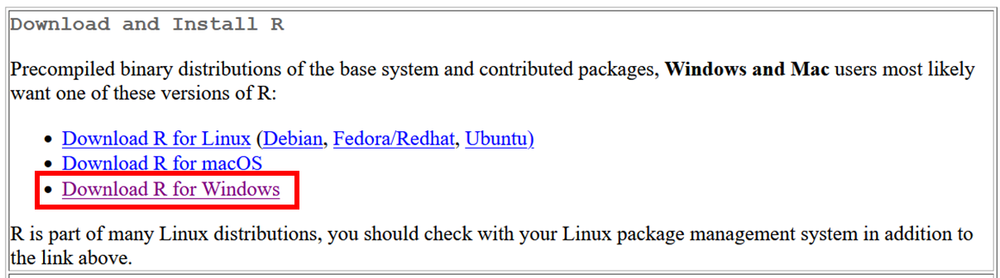
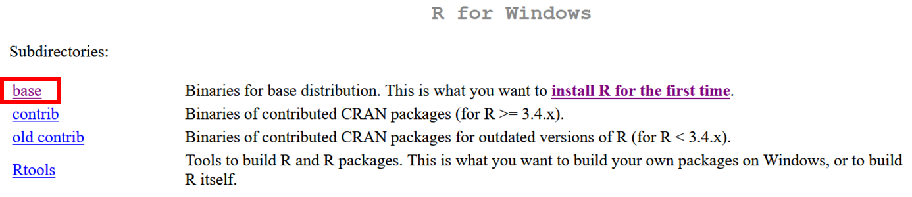
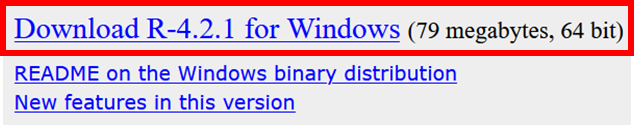
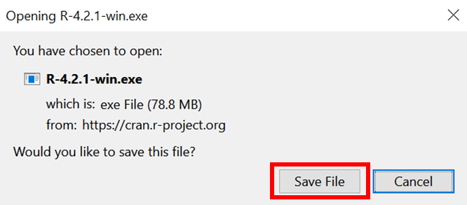

Appendix A — Install software
A.1 Install R
R is a programming language for statistical computing and graphics.
You can download R from the Comprehensive R Archive Network (CRAN) which is a network of servers around the world that store identical up-to-date versions of code and documentation for R.

Scroll down the page to locate the mirror that is the closest to your geographic location and click on its URL.
Selecting a mirror that is close to you may help speed up the download. You can still use another mirror since the closest geographic location does not always give the best mirror.
For instance, when downloading R from Tanzania, you can select the mirror from South Africa.
Once on the CRAN page, select your operating system: Linux, macOS, or Windows.

Select binaries for base distribution

Download the installer


After downloading the installer, follow the installation wizard on your computer.
A.2 Install RStudio
Rstudio is an integrated development environment (IDE) for R.
RStudio does include R when you download and install it, so you need to have installed R to be able to use RStudio with R (see Section Section A.1).
There are different products, but the free Desktop version is just perfect for our needs.
Download the installer:
After downloading the installer, follow the installation wizard on your computer.
RStudio is moving away from its R-exclusive focus and becoming Posit in October 2022 to enable broader data science, scientific research, and technical communication functionalities and, in particular, to integrate Python users.
A.3 Install Quarto
To install Quarto: https://quarto.org/docs/get-started/.
After downloading, follow the installation wizard on your computer.

When the installation is complete, you will not see any new software on your laptop, but Quarto is now available to be used in RStudio, as well as by all other applications on your computer (including the command line).
A.4 GitHub account
A.5 GitHub desktop
To install GitHub Desktop: link. After downloading, follow the installation wizard on your computer.
A.5.1 How to connect your GitHub account to GitHub Desktop?
A.5.1.1 Authenticating to GitHub
To connect to GitHub Desktop with GitHub, you will need to authenticate your GitHub account.
- Use the File menu, then click Options.
- In the Options window, select Accounts.
- To the right of “GitHub.com,” click Sign in.
- In the “Sign in Using Your Browser” pane, click Continue With Browser. GitHub Desktop will open your default browser.
- To authenticate to GitHub, type your GitHub.com credentials and click Sign in. Alternatively, if you were already signed in to GitHub, follow the prompts to return to GitHub Desktop to finish authenticating.
- After GitHub authenticates your account, follow the prompts to return to GitHub Desktop.